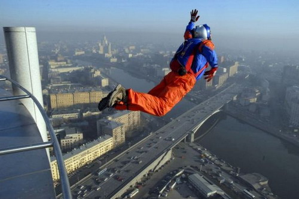
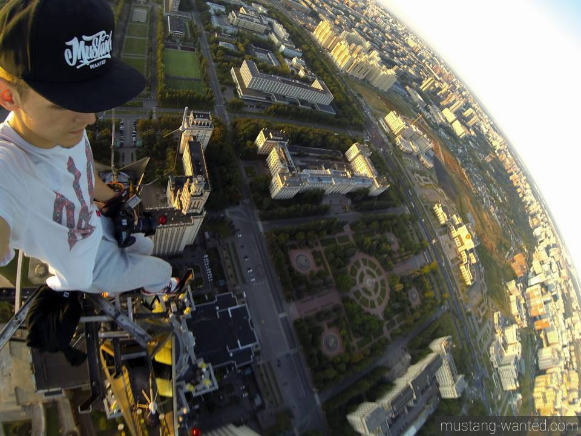
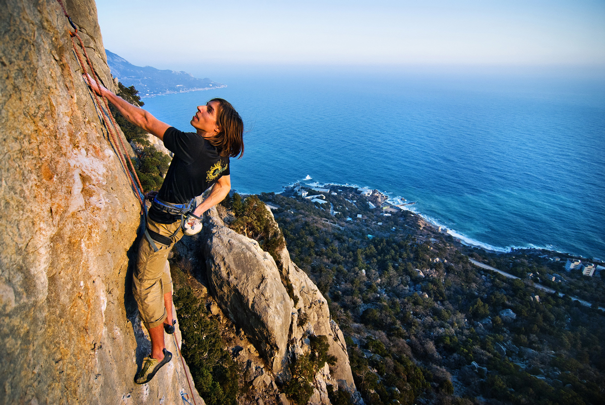
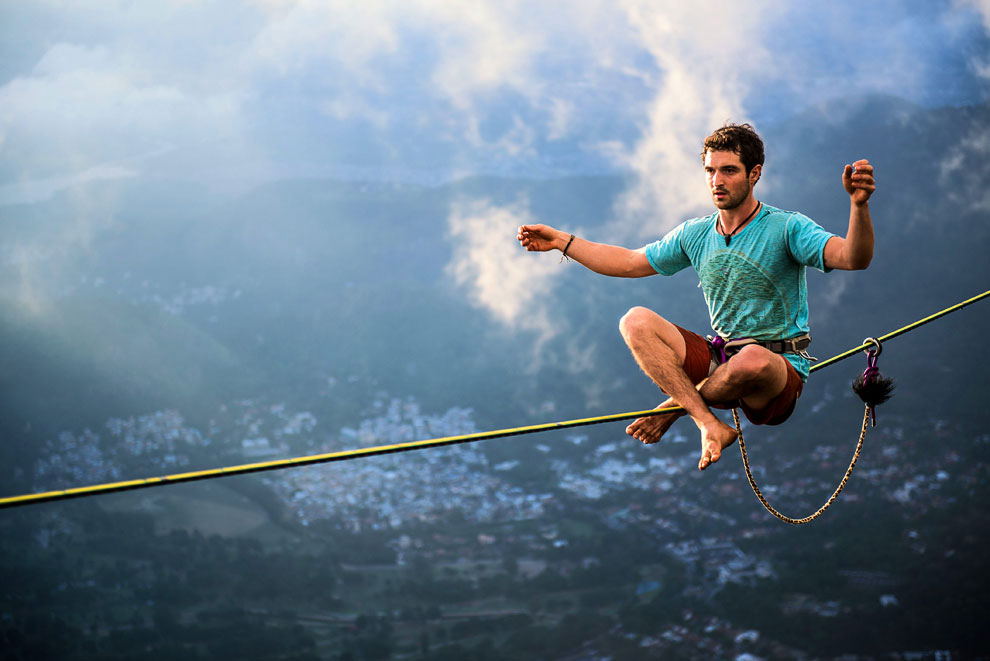
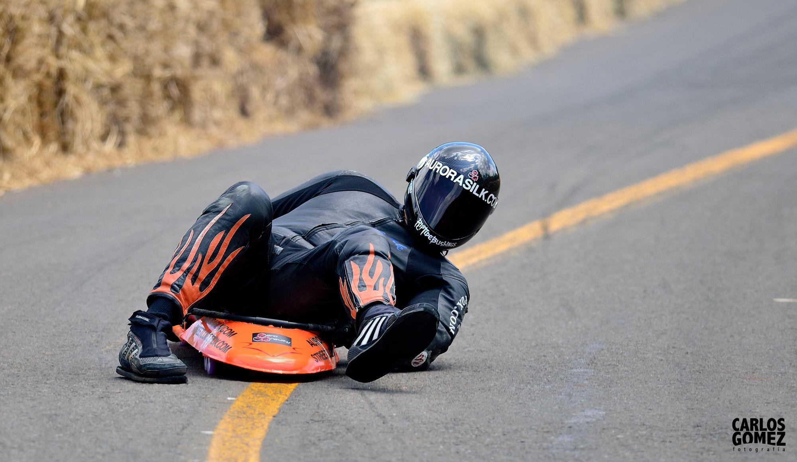

Спорт який перехоплює подих
Бейстжампінг
{kind=link}
Перші згадки о використанні парашутів датується XII століттям нашої ери:китайські акробати використовували маленький парашут, щоб підстраховувати падіння під час вистав.Акронім BASE придумав бейсджампер і відеооператор Карл Беніш, який 8 серпня 1978 року на скелі Ель-Капітан встановив кілька камер і зняв стрибки своїх друзів по імені Кент Лейн й Майк Шерін. Сам Карл не стрибав в той день. Джампери вперше використовували парашут типу «крило» і техніку трекінгу в вільному падінні. Дану дату прийнято вважати днем народження і початком популяризації сучасного бейсджампінга. Після 1978 року стрибки і їх запис на плівку з Ель-Капітан повторювалися, але вже не як показові виступи та зйомка трюків, а в якості розваги. В 1981 році Карл створює обліковий список для всіх бажаючих джамперів, що входять в акронім BASE. Номер 1 отримав джампер з Техасу Філ Сміт. Пізніше Карл отримує номер 4. Даний список на сьогоднішній день містить понад тисячу номерів.
Руфінг
{kind=link}
У народі їх називають останніми романтиками, фанатами дахів, або ж сучасними карлсонами. Скептики вважають їх божевільними.Насправді ж вони - руфери (від англ. Roof - дах). Вони не роблять нічого поганого, просто їх особистий дах зриває від висоти і фантастичних краєвидів міста.Офіційно руфінг означає рух молоді, метою якого є здирання на дахи, щоб відпочити від гамірного міста, поспілкуватися з друзями, пофотографувати. Часто такі вилазки закінчуються неприємностями, адже, як не важко здогадатися, що поліція затримуе порушників правопорядку.
Cкелелазіння
{kind=link}
Скелелазіння — вид спорту, який полягає у вільному лазінні (найчастіше – сходженню) по природному (скелі) або штучному (скалодром) рельєфу. Це самостійний вид спорту, який вийшов з альпінізму й нерозривно пов'язаний з ним.Різниця між альпінізмом і скелелазінням у тому, що в скелелазінні, як правило, є постійні (статичні) точки опори — гаки, які забетовані у скелю, а в альпізмі навпаки, всі точки страховки, як правило, є тимчасові (френди, закладки тощо), а також що альпінізм, на відміну від скелелазіння, дозволяє лазіння з застосування спеціальних інструментів та додаткового спорядження.
Слеклайн
{kind=link}
Слеклайн — вид спорту/активного відпочинку, який означає ходіння по натягнутій стропі. З розвитком умінь ходіння переходить у біг, стрибки та інші акробатичні трюки. Слеклайн є гарним способом тренування рівноваги та концентрації, що може згодитися у різних спортивних дисциплінах. Для цього екстремального виду спорту вам знадобляться жорсткі мотузки, але не дуже сильно натягнуті. Мотузку сильно не натягаютьдля того щоб вона розтягувалася, як гумка, і можна було змінити напругу. Туго натягнута мотузка надасть можливість вам виконувати деякі трюки — якщо ви звичайно, наважитеся! Рекорд по висоті в слеклайнінгу належить Кристіану Шу, він пройшов по натягнутому канату над ущелиною висотою в 3280 футів, що дорівнює трьом Ейфелевим вежам.
Стритлагинг
{kind=link}
Швидкість, небезпека, адреналін – ось що приваблює любителів стрітлагінга (streetluge). Стрітлагінг – це швидкісна їзда на скейтборді. Причому їхати потрібно лежачи. Уявляєте масштаби екстриму? Коли ні повноцінного огляду , ні можливості загальмувати. Тому стрітлагінг і вважається одним з найбільш екстремальних і травмонебезпечних видів спорту. Стрітлагінг веде свій початок з Каліфорнії. Він народився в 70-і роки і з тих пір повільно, але впевненно набирає прихильників . Стрітлагінг для тих, хто шукає небезпеки, кайфує від лавірування між автомобілями.